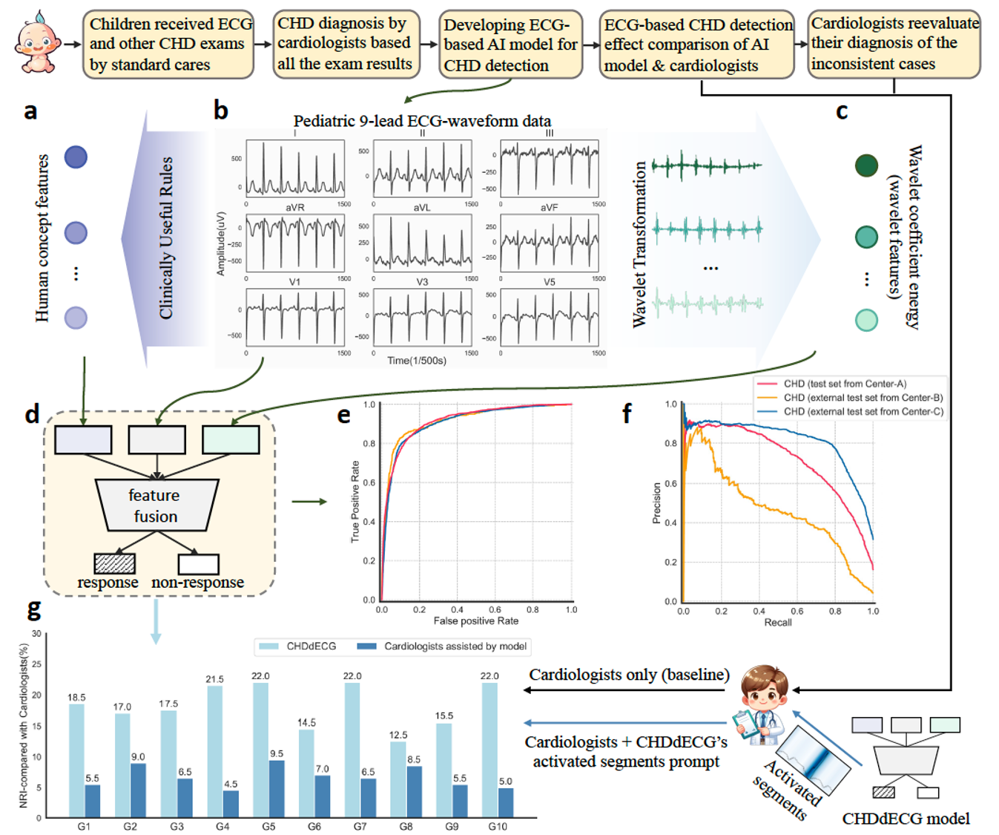

Multimodal medicine · Nature Communications
Concept-informed pediatric ECG intelligence
Deep learning for congenital heart disease detection, integrating human concepts and multicenter pediatric ECG data.
Paper ↗